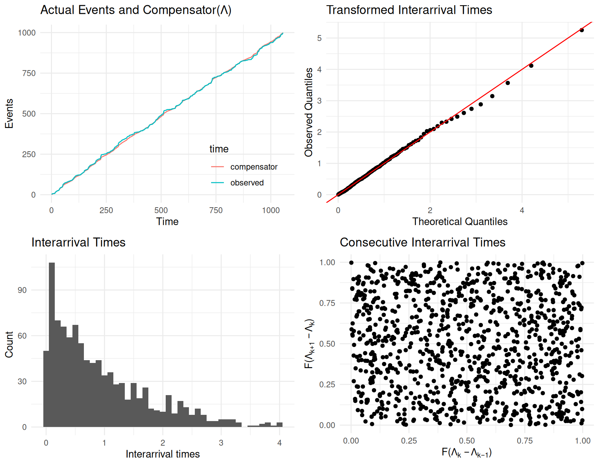
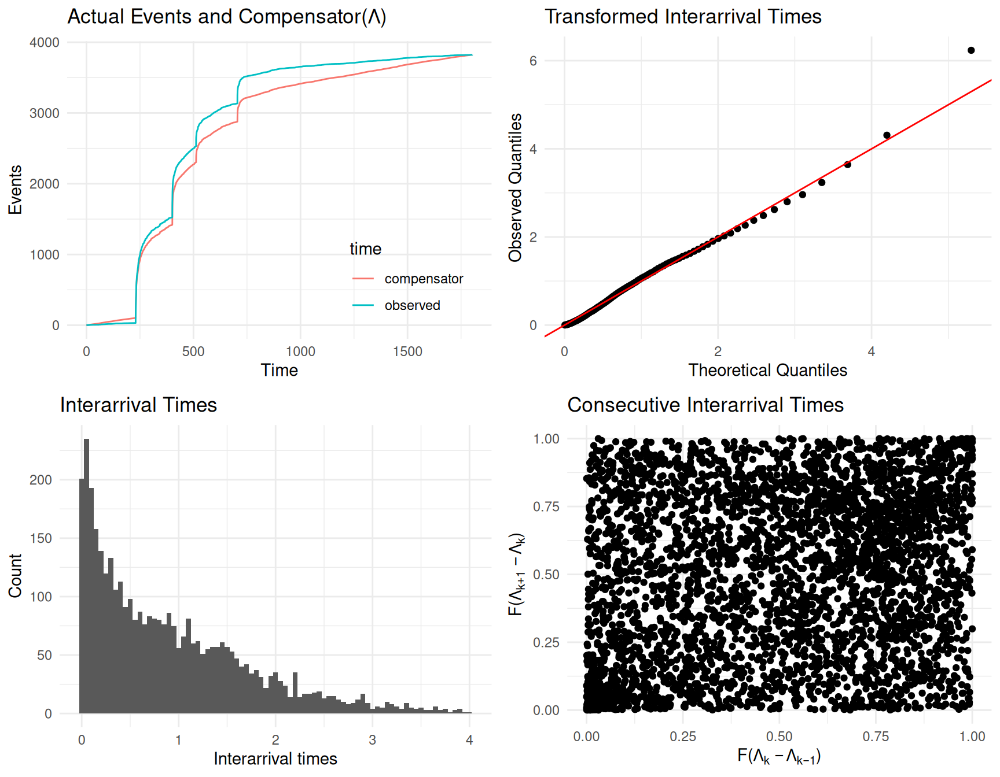
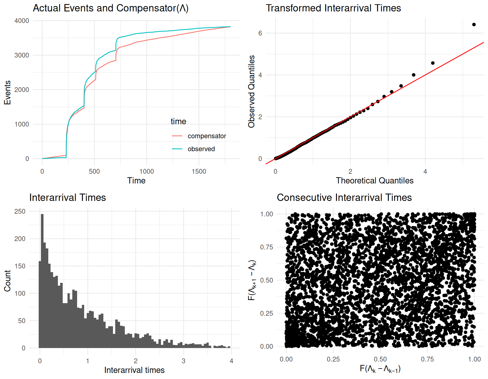

Packages used in this chapter
library(stelfi)
library(ggplot2)In the univariate Hawkes process (Chapter 2) every event triggers further events in exactly the same way. Often, though, some events are more “important” than others: a large earthquake triggers more aftershocks than a small one, and a tweet from an account with many followers is retweeted more than one from an account with few. If each event has a numeric value (a mark) that describes its importance, a marked Hawkes process lets the size of the jump in intensity after an event depend on that mark. In stelfi the conditional intensity is
\[\lambda(t) = \mu + \alpha \sum_{i:\tau_i<t}m(\tau_i)\,\text{exp}(-\beta (t-\tau_i)), \tag{3.1}\]
where \(m(\tau_i)\) is the mark of the event at time \(\tau_i\). The only difference to Equation 2.1 is that the jump after event \(i\) is \(\alpha m(\tau_i)\) rather than \(\alpha\), so an event with mark 2 has twice the effect of an event with mark 1. The parameters \(\mu\), \(\alpha\), and \(\beta\) are interpreted as in Chapter 2, except that the expected number of events triggered by an event with mark \(m\) is \(\alpha m / \beta\), and the average branching ratio is \(\alpha \bar{m} / \beta\), where \(\bar{m}\) is the average mark. stelfi constrains the average branching ratio to be less than 1.
You need two numeric vectors of the same length: the event times (exactly as in Section 2.1.1, sorted with no ties) and the marks, where marks[i] belongs to times[i]. In addition:
Data were simulated (using emhawkes, Lee (2023)) from a marked Hawkes process with \(\mu = 0.5\), \(\alpha = 0.3\), and \(\beta = 1.5\), where each event’s mark is equally likely to be 1, 2, 3, or 4. So an event with mark 4 increases the intensity by \(4 \times 0.3 = 1.2\), whereas an event with mark 1 increases it by only \(0.3\). In emhawkes the marks are generated by the function rmark, and the extra jump in the intensity caused by an event’s mark is given by the function impact: here \(0.3 \times (\text{mark} - 1)\), so that the total jump is \(0.3 \times \text{mark}\).
library(emhawkes)
fn_mark <- function(...) sample(1:4, 1) ## each mark is equally likely to be 1, 2, 3, or 4
impact <- function(param = c(eta1 = 0.3), alpha, n, mark, ...) {
matrix(param["eta1"] * (mark[n] - 1), nrow = 1)
}
h_sim <- new("hspec", mu = 0.5, alpha = 0.3, beta = 1.5, rmark = fn_mark, impact = impact)
set.seed(1)
res <- hsim(h_sim, size = 1000, lambda_component0 = matrix(0.5))
## drop the dummy event at t = 0 that emhawkes adds
sim <- data.frame(times = res$arrival[-1], marks = res$mark[-1])The data are a data frame of 999 event times and the corresponding marks:
stelfiThe marked model is fitted using fit_hawkes() exactly as in Chapter 2, with the extra argument marks.
emhawkesemhawkes can fit marked Hawkes processes where the effect of the mark is specified through an impact function. Here the jump after an event with mark \(m\) is \(\alpha + \eta (m - 1)\), which is a little more general than the stelfi model (the two are the same when \(\eta = \alpha\)), so emhawkes estimates one extra parameter, \(\eta\).
impact <- function(param = c(eta1 = 0.2), alpha, n, mark, ...) {
matrix(param["eta1"] * (mark[n] - 1), nrow = 1)
}
h <- new("hspec", mu = 0.5, alpha = 0.2, beta = 1, impact = impact)
fit_em <- hfit(h, inter_arrival = res$inter_arrival, mark = res$mark,
lambda_component0 = matrix(0.5))
em <- summary(fit_em)$estimate
em Estimate Std. error t value Pr(> t)
mu1 0.4646897 0.03307648 14.048944 7.819128e-45
alpha1 0.3124154 0.10329883 3.024384 2.491396e-03
beta1 1.5327715 0.17365521 8.826522 1.079815e-18
eta1 0.3152552 0.05962909 5.286936 1.243820e-07| \(\mu\) | \(\alpha\) | \(\beta\) | \(\eta\) | |
|---|---|---|---|---|
| Truth | 0.5 | 0.3 | 1.5 | 0.3 |
| stelfi | 0.465 (0.033) | 0.315 (0.034) | 1.536 (0.175) | - |
| emhawkes | 0.465 (0.033) | 0.312 (0.103) | 1.533 (0.174) | 0.315 (0.06) |
The two packages agree closely and both recover the true values. The emhawkes estimate of \(\eta\) is close to its estimate of \(\alpha\), which supports the simpler stelfi model where the jump is proportional to the mark. Note that the stelfi standard error for \(\alpha\) is smaller because it estimates one fewer parameter.
The fitted intensity is shown using show_hawkes(). Compared to Chapter 2 the jumps now differ in size depending on the mark of the event.
The nz_earthquakes data (see Chapter 10) are the times, locations, and magnitudes of 3,824 earthquakes of magnitude 3 and above in the Canterbury region of New Zealand between 2010 and 2014. This period includes the 2010 Darfield (magnitude 7.1) and 2011 Christchurch earthquakes and their many aftershocks. Here only the times and magnitudes are used (the locations are used in Chapter 8).
Simple feature collection with 6 features and 3 fields
Geometry type: POINT
Dimension: XY
Bounding box: xmin: 172.3641 ymin: -43.63492 xmax: 172.7936 ymax: -43.42493
Geodetic CRS: +proj=longlat +datum=WGS84 +no_defs +ellps=WGS84 +towgs84=0,0,0
origintime magnitude depth geometry
1 2014-12-24 07:46:00 3.208996 13.671875 POINT (172.7133 -43.57944)
2 2014-12-24 06:43:00 4.109075 5.820312 POINT (172.7204 -43.55752)
3 2014-12-14 08:53:00 3.240377 5.058594 POINT (172.3641 -43.62563)
4 2014-12-12 13:37:00 4.459034 9.394531 POINT (172.368 -43.63492)
5 2014-11-20 08:24:00 3.116447 10.039062 POINT (172.7836 -43.42493)
6 2014-11-18 14:19:00 3.158710 11.269531 POINT (172.7936 -43.4897)The times are converted to days since the first earthquake. The times are recorded to the nearest minute and some earthquakes share the same minute, so a small random amount of time (up to one minute) is added to each one. This keeps every earthquake, which is preferable to dropping tied events (Section 2.1.1). The data are then sorted by time, keeping each magnitude with its time.
[1] 185The catalogue only includes earthquakes of magnitude 3 and above. Seismologists usually assume that the number of aftershocks triggered by an earthquake grows exponentially with magnitude, so the mark is taken to be \(m = \text{exp}(\text{magnitude} - 3)\): an earthquake of magnitude 3 has mark 1, and one of magnitude 7.1 has mark \(e^{4.1} \approx 60\).
For comparison, both an unmarked model (every earthquake triggers equally) and the marked model are fitted.
Estimate Std. Error
mu 0.3330085 0.01849029
alpha 3.5500691 0.20235170
beta 4.2095632 0.24807221 Estimate Std. Error
mu 0.3165789 0.01831468
alpha 1.5257779 0.09103272
beta 3.1923044 0.19626381The two models can be compared using AIC (twice the negative log-likelihood, stored as fit$objective, plus twice the number of parameters). Since the marks are treated as known, both models have three parameters.
unmarked marked
-12882.68 -13315.46 The marked model has a much lower AIC, so allowing larger earthquakes to trigger more aftershocks gives a substantially better description of the data. From the marked model:
The fitted intensity shows the huge spikes in activity following the largest earthquakes.
The goodness-of-fit procedures for the marked model are exactly those described in Section 2.4: the compensator now includes the marks, but show_hawkes_GOF() takes care of this. For the simulated example (where the model is correct) there is no evidence of lack of fit:
Asymptotic one-sample Kolmogorov-Smirnov test
data: interarrivals
D = 0.021269, p-value = 0.7573
alternative hypothesis: two-sided
Box-Ljung test
data: interarrivals
X-squared = 0.19825, df = 1, p-value = 0.6561
For the earthquake data the two models can be compared:
Asymptotic one-sample Kolmogorov-Smirnov test
data: interarrivals
D = 0.049534, p-value = 1.425e-08
alternative hypothesis: two-sided
Box-Ljung test
data: interarrivals
X-squared = 179.35, df = 1, p-value < 2.2e-16
Asymptotic one-sample Kolmogorov-Smirnov test
data: interarrivals
D = 0.045449, p-value = 2.767e-07
alternative hypothesis: two-sided
Box-Ljung test
data: interarrivals
X-squared = 292.25, df = 1, p-value < 2.2e-16
For both models the tests give very small p-values, and the plots show where the models fall short. Before the first large earthquake (around day 230) the compensator lies above the observed number of earthquakes, so the background rate is overestimated in this quiet period, while after each large earthquake the compensator lags below the observed count, so the models underpredict the number of aftershocks. The cluster of points in the bottom left corner of the consecutive compensator differences plot shows that short gaps tend to be followed by short gaps, which is the correlation picked up by the Ljung-Box test. Including the magnitudes improves the likelihood considerably (see the AIC above), but the diagnostic plots for the two models look similar, and neither model is fully adequate.
This is a well known feature of earthquake data: aftershock activity decays like a power law in time (the Omori-Utsu law) rather than exponentially, so an exponential kernel cannot capture both the very intense activity immediately after a large earthquake and the long tail of aftershocks that follows. Models designed specifically for earthquakes (e.g., the ETAS model) use a power law kernel. The background rate is also unlikely to be constant over the whole period. The marked Hawkes model is still useful, for example for quantifying how much more a large earthquake triggers than a small one, but its estimates should be interpreted with these limitations in mind.